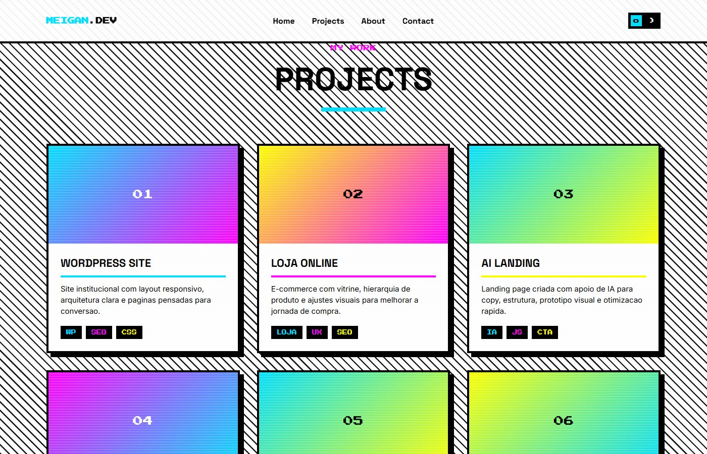
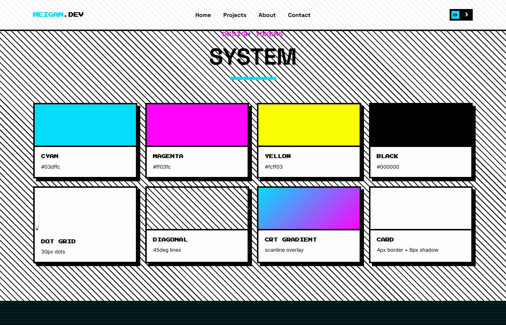

Identidade
01
O nome ganha o protagonismo da primeira dobra.
Tipografia grande, selo pixelado e cor pontual tornam a identidade imediatamente reconhecível na abertura.
Uma proposta expressiva inspirada em interfaces de arcade, com tipografia pixel, cores intensas e cards de projeto de alto contraste.
Aqui, a identidade assume referências de jogos clássicos: grid pontilhado, grafismos diagonais, cores vibrantes e contornos marcados. A demonstração apresenta uma forma mais energética de organizar o mesmo tipo de acervo de projetos.
A proposta mantém navegação e leitura de portfólio, mas troca a discrição editorial por impacto gráfico.
Tipografia grande, selo pixelado e cor pontual tornam a identidade imediatamente reconhecível na abertura.

A grade usa molduras escuras, cores alternadas e títulos compactos para criar ritmo entre os projetos de exemplo.

O sistema reúne padrões pontilhados e diagonais, sombra dura e cores de arcade para manter a identidade coesa.
Investigar uma identidade de portfólio com mais personalidade visual sem perder a organização dos projetos.
Usar padrões de arcade, paleta vibrante, tipografia pixel e uma grade de cards com hierarquia clara.
Uma segunda direção navegável, contrastante com a editorial, que fornece os acentos incorporados ao estudo híbrido.
O estudo híbrido usa este repertório gráfico junto da estrutura mais calma da direção editorial.